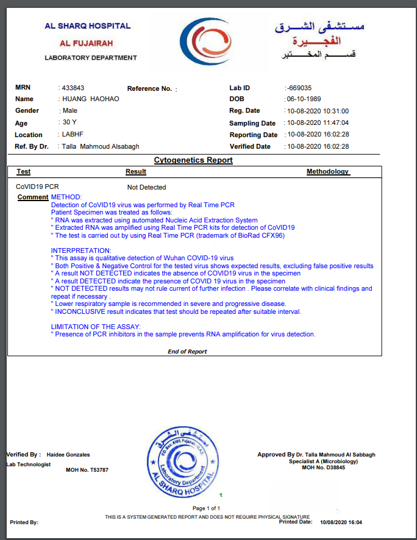

<!DOCTYPE html>
<html lang="en">
<head>
    <meta charset="UTF-8">
    <title>Title</title>
    <script src="js/jquery.min.js"></script>
<!--    <style>-->
<!--        p{-->
<!--            width: 200px;-->
<!--            height: 40px;-->
<!--            text-align: center;-->
<!--            line-height: 40px;-->
<!--            margin: 100px auto;-->
<!--            color:#fff;-->
<!--            font-size: 24px;-->
<!--            background-color: #000;-->
<!--            display: none;-->
<!--        }-->
<!--    </style>-->
</head>
<!--<body>-->
<!--    <p class="tip"></p>-->
<!--</body>-->
<!--<script>-->
<!--    //使用最原始的方法检测网络-->
<!--    let flag = window.navigator.onLine;-->
<!--    console.log(flag);-->

<!--    window.addEventListener("online",function (){-->
<!--        $(".tip").text("网络已经链接").fadeIn(500).delay(1000).fadeOut()-->
<!--    })-->
<!--    window.addEventListener("offline",function (){-->
<!--        $(".tip").text("网络已经断开").fadeIn(500).delay(1000).fadeOut()-->
<!--    })-->


<!--</script>-->


<!--<body>-->
<!--<div>-->
<!--    -->
<!--    <button id="full">全屏显示</button>-->
<!--    <button id="cancelFull">取消全屏显示</button>-->
<!--    <button id="isFull">是否全屏</button>-->
<!--</div>-->

<!--</body>-->
<!--<script>-->
<!--    //全屏显示可以使任意元素-->
<!--    //h5 API 存在兼容性问题-->
<!--    //即使高版本浏览器有兼容性问题-->
<!--    let div = document.querySelector("div");-->
<!--    let full = document.querySelector("#full");-->
<!--    full.onclick = function (){-->
<!--        if(div.requestFullscreen){-->
<!--            div.requestFullscreen();-->
<!--        }else if(div.webkitRequestFullScreen){-->
<!--            div.webkitRequestFullScreen();-->
<!--        }else if(div.mozRequestFullScreen){-->
<!--            div.mozRequestFullScreen();-->
<!--        }else{-->
<!--            div.msRequestFullscreen();-->
<!--        }-->
<!--    }-->

<!--    let cancelFull = document.querySelector("#cancelFull");-->
<!--    //取消全屏跟元素没有关系-->
<!--    cancelFull.onclick = function (){-->
<!--        document.webkitCancelFullScreen();-->
<!--    }-->

<!--    let isFull = document.querySelector("#isFull");-->
<!--    isFull.onclick= function (){-->
<!--        console.log(document.webkitIsFullScreen);-->
<!--    }-->

<!--</script>-->


<!--<body>-->
<!--<p id="demo">点击按钮获取坐标</p>-->
<!--<button onclick="getLocation()">try</button>-->
<!--</body>-->
<!--<script>-->

<!--    function getLocation(){-->
<!--        if(navigator.geolocation){-->
<!--            navigator.geolocation.getCurrentPosition((position)=>{-->
<!--                console.log(position);-->
<!--            },(err)=>{-->
<!--                console.log(err);-->
<!--            })-->
<!--        }-->
<!--    }-->

<!--</script>-->

<!--<style>-->
<!--    #p1{-->
<!--        height: 25px;-->
<!--        background-color: pink;-->
<!--        line-height: 25px;-->
<!--        text-align: center;-->

<!--    }-->
<!--</style>-->
<!--<body>-->
<!--<div id="div1">-->
<!--    <p id="p1" draggable="true">拖拽内容</p>-->
<!--</div>-->
<!--<div id="div2"></div>-->
<!--<div id="div3"></div>-->

<!--</body>-->
<!--<script>-->
<!--    -->
<!--</script>-->


<!--<body>-->
<!--<input type="text" id="username">-->
<!--<br>-->
<!--<br>-->
<!--<button id="setData">setData</button>-->
<!--<button id="getData">getData</button>-->
<!--<button id="delData">delData</button>-->
<!--</body>-->

<!--<script>-->
<!--    let username = document.querySelector("#username");-->

<!--    document.querySelector("#setData").onclick= function (){-->
<!--        let val = username.value ;-->
<!--        window.sessionStorage.setItem("username",val);-->
<!--    }-->
<!--    document.querySelector("#getData").onclick= function (){-->
<!--        let val= window.sessionStorage.getItem("username");-->
<!--        username.value = val ;-->
<!--    }-->

<!--    document.querySelector("#delData").onclick= function (){-->
<!--        let val= window.sessionStorage.removeItem("username");-->
<!--        // username.value = val ;-->
<!--    }-->


<!--</script>-->

<!--<body>-->
<!--<video controls>-->
<!--    <source src="video/12%20本地存储（一）.mp4">-->
<!--</video>-->
<!--</body>-->


</html>